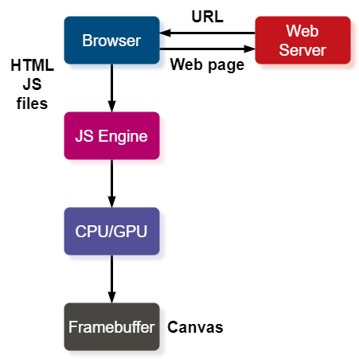

计算机图形学
第三章 交互和动画
动画
动画
回调
API中用用回调函数或事件监听实现事件驱动输入
- 分别为图形系统能够识别的事件定义回调函数
- 浏览器进入事件循环，并响应注册了这些回调函数的事件
- 当产生了这些事件时，就执行相应的回调函数
浏览器执行
- 载入HTML文件，包含shader
- 异步载入并执行js代码
- 浏览器进入事件循环并等待事件响应

动画
Onload事件
- 在包含有图形计算相关代码的js文件中，所有的动作都定义在init()，render()之类的函数中，这些函数需要进行调用，JavaScript引擎不会自动执行这些代码
- 因此，需要利用窗口的onload事件调用初始化执行init函数，，当所有文件都加载完毕后就执行onload事件
- 有window.onload=init;
动画
旋转矩形
考虑由上述四点构成的正四边形，实现按角速度θ旋转的动画效果
动画
简单方法实现
for(var theta = 0.0; theta < thetaMax; theta +=dtheta){
vertices[0]=vec2( Math.sin(theta), Math.cos.(theta));
vertices[1]=vec2( Math.sin(theta), -Math.cos.(theta));
vertices[2]=vec2(-Math.sin(theta), -Math.cos.(theta));
vertices[3]=vec2(-Math.sin(theta), Math.cos.(theta));
gl.bufferSubData(……………………);
render();
}
动画
更好的方式
- 将原始顶点传入顶点着色器
- 将旋转角度θ作为着色器常量传入顶点着色器
- 在顶点着色器内计算新的顶点坐标，逐次更新顶点位置并绘制
- 继续绘制
var thetaLoc = gl.getUniformLocation( program, "uTheta" );
function render()
{
gl.clear( gl.COLOR_BUFFER_BIT);
uTheta += 0.1;
gl.uniform1f( thetaLoc, uTheta );
gl.drawArrays( gl.TRIANGLE_STRIP, 0, 4 );
render();
}
动画
requestAnimationFrame
- 仅调用render函数会导致栈溢出，原因是函数调用速度快于函数执行速度
- 更为合理的方式是使用requestAnimationFrame函数，可以让JS在每次更新后只执行一次刷新
function render()
{
gl.clear( gl。COLOR_BUFFER_BIT);
uTheta += 0.1;
gl.uniform1f( thetaLoc, uTheta );
gl.drawArrays( gl.TRIANGLE_STRIP, 0, 4 );
requestAnimationFrame(render);
}
动画
Vertex Shader
in vec4 vPosition;
uniform float uTheta;
void main()
{
gl_Position.x = -sin(uTheta) * aPosition.y + cos(uTheta) * aPosition.x;
gl_Position.y = sin(uTheta) * aPosition.x + cos(uTheta) * aPosition.y;
gl_Position.z = 0.0;
gl_Position.w = 1.0;
}
动画
双缓存机制
绘制代码将矩形渲染到缓存中，需要将缓存中的内容显示出来，目前的浏览器采用
- 两个缓存器，一个用于当前显示，同时在后台将下一帧内容渲染到另一缓存中，当前帧绘制完毕后交换两个缓存
- 可避免显示尚未渲染完毕的缓存
- 浏览器显示频率为60Hz，即重复显示一个缓存，并非交换缓存
- sk 可通过事件触发交换缓存，以旋转正方形为例
- 设置间隔时间Interval Time，setInterval(render, interval)，在指定时间过后执行渲染函数，同时交换缓存，如果将时间间隔设置为0，将会在最短时间内完成缓存交换，导致栈溢出
- 回调函数requestAnimFrame(推荐使用)
动画
Interval Sample
function render()
{
setTimeout( function(){
requestAnimationFrame( render );
gl.clear( gl.COLOR_BUFFER_BIT );
uTheta += 0.1;
gl.uniform1f( thetaLoc, uTheta );
gl.drawArrays( gl.TRIANGLE_STRIP, 0, 4 );
}, 100 );
}
动画
添加交互式控制

动画
添加按钮
添加按钮，用以控制旋转方向，并采用一全局变量表示旋转方向，并修改对应render函数
var direction = true;//global initialization
// in render()
if(direction) uTheta += 0.1;
else uTheta -= 0.1;
动画
HTML中的按钮
在HTML文件中添加按钮，当点击按钮时产生相应的click事件
<button id="DirectionButton">Change Rotation Direction</button>
JS文件中，相应的事件监听器的实现有如下两种形式：
var myButton = document.getElementById("DirectionButton");
myButton.addEventListener("click", function(){
direction = !direction;
});
document.getElementById("Direction").onclick = function(){ direction = !direction;}
可以利用CSS或jQuery实现按键更好的视觉效果
动画
Onclick实现
onclick的其它实现
myButton.addEventListener("click", function(){
if(event.button == 0){direction = !direction;}
});
myButton.addEventListener("click", function(){
if(event.shiftKey == 0){ direction=!direction;}
})
<button onclick="direction=!direction"></button>
动画
控制旋转速度
添加代码，控制四边形旋转速度
var delay = 100;
function render()
{
setTimeout( function(){
requestAnimationFrame(render);
gl.clear(gl.COLOR_BUFFER_BIT);
uTheta += (direction?0.1:-0.1);
gl.uniform1f( thetaLoc, uTheta );
gl.drawArrays( gl.TRIANGLE_STRIP, 0, 4);
}, delay);
}
动画
菜单监听器
var m=document.getELementById("mymenu");
m.addEventListener("click", function(){
switch(m.electedIndex){
case 0:
direction=!direction;
break;
case 1:
delay /= 2.0;
break;
case 2:
delay *= 2.0;
break;
}
});
动画
键盘按键
window.addEventListener("keydown",function(){
switch(event.keyCodde){
case 49: // '1' key
direction =! direction;
break;
case 50: // '2' key
delay /= 2.0;
break;
case 51: // '3' key
delay *= 2.0;
break;
}
});
window.onkeydown = function(event){
var key = String.fromCharCode(event.keyCode);
switch(key){
case '1':
direction = !direction;
break;
case '2':
delay /= 2.0;
break;
case '3':
delay *= 2.0;
break;
}
};
动画
滑杆输入
也可通过在HTML页面添加滑杆控制旋转速度
- 为元素命名
- 设置最大和最小值
- 设置步长值，用于生成对应事件
- 设置初始值
<div>speed 0
<input id="slide" type="range" min="0" max="100" step="10" value="50"/>
100</div>
对应onchange事件监听器
documet.getElementbyId("slide").onchange=
function(){ delay = event.srcElement.value; };